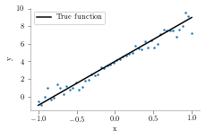
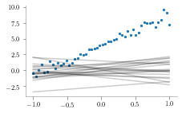
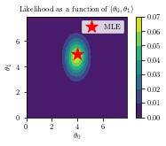
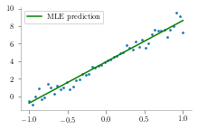
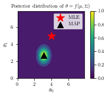
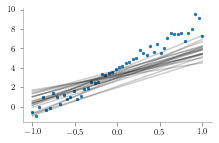
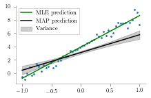

from latexify import *Sample from prior
import numpy as np
import pandas as pd
import matplotlib.pyplot as plt
%matplotlib inlinenp.random.seed(42)x = np.linspace(-1, 1, 50).reshape(-1, 1)y = 5*x + 4
noise = (np.abs(x.flatten())*np.random.randn(len(x))).reshape(-1,1)
y = y + noiselatexify()
plt.scatter(x, y,s=2)
plt.plot(x, 5*x + 4, 'k', label='True function')
format_axes(plt.gca())
plt.xlabel("x")
plt.ylabel("y")
plt.legend()
plt.savefig("bayesian-linear-dataset.pdf",bbox_inches="tight", transparent=True)
from scipy.stats import multivariate_normal
from matplotlib import cm
cov = np.array([[ 1 , 0], [0, 1]])
var = multivariate_normal(mean=[0,0], cov=cov)
x_grid, y_grid = np.mgrid[-1:1:.01, -1:1:.01]
pos = np.dstack((x_grid, y_grid))
z = var.pdf(pos)
plt.contourf(x_grid, y_grid, z)
plt.gca().set_aspect('equal')
plt.xlabel(r"$\theta_0$")
plt.ylabel(r"$\theta_1$")
plt.title(r"Prior distribution of $\theta = f(\mu, \Sigma)$")
plt.colorbar()
plt.savefig("bayesian-linear-prior.pdf",bbox_inches="tight", transparent=True)
\[ \prod_{i=1}^{n} \frac{1}{\sqrt{2 \pi \sigma^{2}}} e^{-\frac{(y_{i}-\hat{y}_{i})^{2}}{2 \sigma^{2}}} \]
n_samples = 20
for n in range(n_samples):
theta_0_s, theta_1_s = var.rvs()
plt.plot(x, theta_1_s*x + theta_0_s, color='k',alpha=0.2)
plt.scatter(x, y,s=5)
format_axes(plt.gca())
plt.savefig("bayesian-linear-prior-samples.pdf",bbox_inches="tight", transparent=True)
Likelihood of theta
def likelihood(theta_0, theta_1, x, y, sigma):
s = 0
x_plus_1 = np.hstack((np.ones_like(x), x))
for i in range(len(x)):
y_i_hat = x_plus_1[i, :]@np.array([theta_0, theta_1])
s += (y[i,:]-y_i_hat)**2
return np.exp(-s/(2*sigma*sigma))/np.sqrt(2*np.pi*sigma*sigma)likelihood(-1, 1, x, y, 4)array([1.20939456e-21])x_grid_2, y_grid_2 = np.mgrid[0:8:.1, 0:8:.1]
li = np.zeros_like(x_grid_2)
for i in range(x_grid_2.shape[0]):
for j in range(x_grid_2.shape[1]):
li[i, j] = likelihood(x_grid_2[i, j], y_grid_2[i, j], x, y, 4)
plt.contourf(x_grid_2, y_grid_2, li)
plt.gca().set_aspect('equal')
plt.xlabel(r"$\theta_0$")
plt.ylabel(r"$\theta_1$")
plt.colorbar()
plt.scatter(4, 5, s=200, marker='*', color='r', label='MLE')
plt.title(r"Likelihood as a function of ($\theta_0, \theta_1$)")
plt.legend()<matplotlib.legend.Legend at 0x7f78ae5d0050>
Likelihood of \(\sigma^2\)
x_plus_1 = np.hstack((np.ones_like(x), x))
theta_mle = np.linalg.inv(x_plus_1.T@x_plus_1)@(x_plus_1.T@y)
sigma_2_mle = np.linalg.norm(y - x_plus_1@theta_mle)**2
sigma_mle = np.sqrt(sigma_2_mle)
sigma_mle3.657127785305386y_hat_mle = x_plus_1@theta_mle
plt.plot(x, y_hat_mle, color='green',label='MLE prediction')
plt.scatter(x, y,s=3)
plt.legend()
format_axes(plt.gca())
plt.savefig("mle-prediction.pdf", bbox_inches="tight", transparent=True)
Posterior
\[ \begin{aligned} p(\boldsymbol{\theta} | \mathcal{X}, \mathcal{Y}) &=\mathcal{N}\left(\boldsymbol{\theta} | \boldsymbol{m}_{N}, \boldsymbol{S}_{N}\right) \\ \boldsymbol{S}_{N} &=\left(\boldsymbol{S}_{0}^{-1}+\sigma^{-2} \boldsymbol{\Phi}^{\top} \boldsymbol{\Phi}\right)^{-1} \\ \boldsymbol{m}_{N} &=\boldsymbol{S}_{N}\left(\boldsymbol{S}_{0}^{-1} \boldsymbol{m}_{0}+\sigma^{-2} \boldsymbol{\Phi}^{\top} \boldsymbol{y}\right) \end{aligned} \]
S0 = np.array([[ 1 , 0], [0, 1]])
M0 = np.array([0, 0])
SN = np.linalg.inv(np.linalg.inv(S0) + (sigma_mle**-2)*x_plus_1.T@x_plus_1)
MN = SN@(np.linalg.inv(S0)@M0 + (sigma_mle**-2)*(x_plus_1.T@y).squeeze())MN, SN(array([3.10016556, 2.66117401]), array([[2.11040182e-01, 2.55007485e-17],
[2.55007485e-17, 4.35348986e-01]]))from scipy.stats import multivariate_normal
from matplotlib import cm
cov = np.array([[ 1 , 0], [0, 1]])
var_pos = multivariate_normal(mean=MN, cov=SN)
x_grid, y_grid = np.mgrid[0:8:.1, 0:8:.1]
pos = np.dstack((x_grid, y_grid))
z = var_pos.pdf(pos)
plt.contourf(x_grid, y_grid, z)
plt.gca().set_aspect('equal')
plt.xlabel(r"$\theta_0$")
plt.ylabel(r"$\theta_1$")
plt.title(r"Posterior distribution of $\theta = f(\mu, \Sigma)$")
plt.scatter(4, 5, s=200, marker='*', color='r', label='MLE')
plt.scatter(MN[0], MN[1], s=100, marker='^', color='black', label='MAP')
plt.colorbar()
plt.legend()
plt.savefig("bayesian-linear-map-mle.pdf", bbox_inches="tight", transparent=True)
Sample from posterior
n_samples = 20
for n in range(n_samples):
theta_0_s, theta_1_s = var_pos.rvs()
plt.plot(x, theta_1_s*x + theta_0_s, color='k',alpha=0.2)
plt.scatter(x, y, s=5)
format_axes(plt.gca())
plt.savefig("bayesian-linear-samples-posterior.pdf", bbox_inches="tight", transparent=True)
Posterior predictions
\[ \begin{aligned} p\left(y_{*} | \mathcal{X}, \mathcal{Y}, \boldsymbol{x}_{*}\right) &=\int p\left(y_{*} | \boldsymbol{x}_{*}, \boldsymbol{\theta}\right) p(\boldsymbol{\theta} | \mathcal{X}, \mathcal{Y}) \mathrm{d} \boldsymbol{\theta} \\ &=\int \mathcal{N}\left(y_{*} | \boldsymbol{\phi}^{\top}\left(\boldsymbol{x}_{*}\right) \boldsymbol{\theta}, \sigma^{2}\right) \mathcal{N}\left(\boldsymbol{\theta} | \boldsymbol{m}_{N}, \boldsymbol{S}_{N}\right) \mathrm{d} \boldsymbol{\theta} \\ &=\mathcal{N}\left(y_{*} | \boldsymbol{\phi}^{\top}\left(\boldsymbol{x}_{*}\right) \boldsymbol{m}_{N}, \boldsymbol{\phi}^{\top}\left(\boldsymbol{x}_{*}\right) \boldsymbol{S}_{N} \boldsymbol{\phi}\left(\boldsymbol{x}_{*}\right)+\sigma^{2}\right) \end{aligned} \]
For a point \(x*\)
Predictive mean = \(X^Tm_N\)
Predictive variance = \(X^TS_NX + \sigma^2\)
x_plus_1.T.shape, SN.shape, x_plus_1.shape((2, 50), (2, 2), (50, 2))pred_var = x_plus_1@SN@x_plus_1.T
pred_var.shape(50, 50)## Marginal
individual_var = pred_var.diagonal()y_hat_map = x_plus_1@MN
plt.plot(x, y_hat_mle, color='green',label='MLE prediction')
plt.plot(x, y_hat_map, color='black', label='MAP prediction')
plt.fill_between(x.flatten(), y_hat_map-individual_var, y_hat_map+individual_var, alpha=0.2, color='black', label='Variance')
plt.scatter(x, y,s=3)
plt.legend()
format_axes(plt.gca())
plt.savefig("bayesian-linear-full.pdf", bbox_inches="tight", transparent=True)
SNarray([[2.11040182e-01, 2.55007485e-17],
[2.55007485e-17, 4.35348986e-01]])MNarray([3.10016556, 2.66117401])Animation
S0 = np.array([[ 1 , 0], [0, 1]])
M0 = np.array([0, 0])samples = np.random.choice(50, size=50, replace=False)
samplesarray([41, 21, 13, 45, 7, 20, 5, 3, 43, 14, 28, 12, 8, 34, 49, 23, 37,
4, 11, 33, 36, 1, 16, 44, 26, 47, 15, 42, 46, 9, 29, 30, 22, 24,
27, 10, 0, 17, 38, 39, 32, 40, 6, 31, 19, 48, 2, 25, 18, 35])for i in range(10, 180):
SN = np.linalg.inv(np.linalg.inv(S0) + (sigma_mle**-2)*((x_plus_1[samples[:i+1]].T)@(x_plus_1[samples[:i+1]])))
MN = SN@(np.linalg.inv(S0)@M0 + (sigma_mle**-2)*(x_plus_1.T@y).squeeze())
var_pos = multivariate_normal(mean=MN, cov=SN)
x_grid, y_grid = np.mgrid[0:8:.1, 0:8:.1]
pos = np.dstack((x_grid, y_grid))
z = var_pos.pdf(pos)
plt.contourf(x_grid, y_grid, z)
plt.gca().set_aspect('equal')
plt.xlabel(r"$\theta_0$")
plt.ylabel(r"$\theta_1$")
plt.title(r"Posterior distribution of $\theta = f(\mu, \Sigma)$")
plt.scatter(4, 5, s=200, marker='*', color='r', label='MLE')
plt.scatter(MN[0], MN[1], s=100, marker='^', color='black', label='MAP')
plt.colorbar()
plt.savefig("%d.png" %i, bbox_inches="tight", transparent=True)
plt.clf()Exception ignored in: <function TransformNode.set_children.<locals>.<lambda> at 0x7f78ae2004d0>
Traceback (most recent call last):
File "/home/nipunbatra-pc/anaconda3/lib/python3.7/site-packages/matplotlib/transforms.py", line 178, in <lambda>
ref = weakref.ref(self, lambda ref, sid=id(self),
KeyboardInterrupt(x_plus_1[samples:i+1])